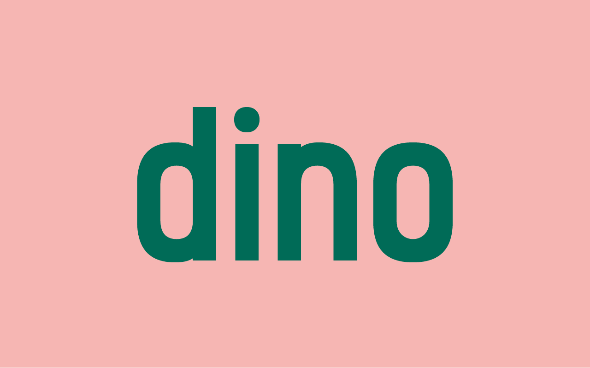

dino
Dino is condensed, bold, geometric. Inspired by road- signature fonts like DIN and interstate. But tries to be more human-like with a double story 'a' and double story 'g'. Dino also has some funny icons.Check dino here!

Bachelor in Visual Arts, Graphic Design
Based in Brussels
Lover of pizza & coffee. But not together.
ahoi@woutneirynck.be (non-existing, you spambot)